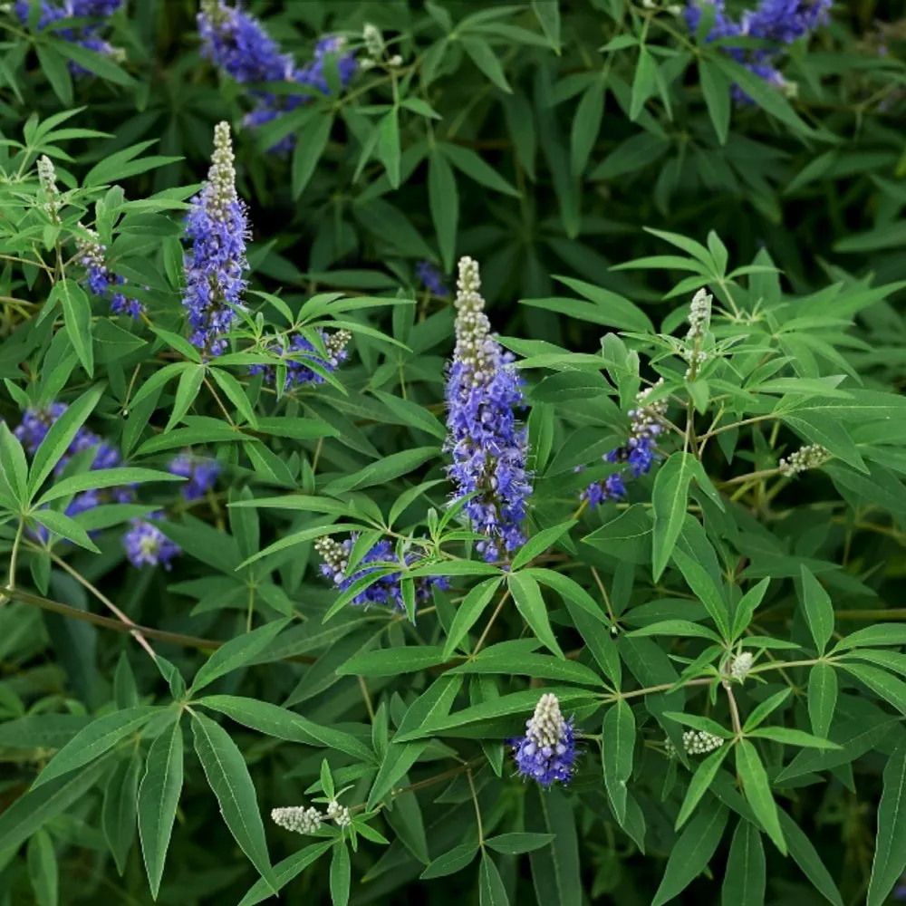

Latthe Education Society's Acharya Deshabhushan Ayurvedic Medical College And Hospital Bedkihal-Shamanewadi, 591214
Department of Dravyaguna Vigyana

Basonym of Drug
Nirgundi
Main Synonym
Sinduvara
Swetapushpa
Sinduka
Sinduvaraka
Nilapushpi
Suvaha
Regional Name
Bengali: Nishinda
Gujarati: Nagoda
Hindi: Samhalu, Sanduaar
Marathi: Nigada
Tamil: Nochhi
Telugu: Vavili
English: Five Leaved Chaste Tree
Botanical Name
Vitex nigundo Linn
Family
Verbenaceae
External Morphology
5-8 meter high shrub
Useful Parts
Root
Leaves
Seeds
Important Phytoconstituent
Phenols
Beta-sitosterol
Camphene
Angoside
Casticin
Artemetin
Orientin
Rasa Panchak
Rasa: Katu, Tikta
Guna: Laghu, Ruksha
Virya: Ushna
Vipaka: Katu
Action
Vatakaphahara
Therapeutic Indication
Keshya (Hair tonic)
Chakshushya (Eye tonic)
Krimighna (Anti-helminthic)
Vranaropana (Wound-healing)
Shoolahara (Analgesic)
Sothahara (Anti-inflammatory)
Therapeutic Uses
Aamavata:
Nirgundi, Tulsi, and Bhringaraja juice with Ajwain seeds powder are taken in rheumatoid arthritis.
Jwara:
Leaves decoction is beneficial for chronic fever.
Vrana:
Oil prepared with leaves, roots, and seeds is beneficial in wound healing.
Shirahashoola:
Leaves are wrapped around the forehead for relieving headaches.
Dose
Leaves juice - 20-40 ml
Root powder - 1-3 gm
Leaves powder - 2-5 gm
Formulations
Nirgundi Taila
Nirgundi Kalpa
Adverse Effect
Not Known
Remedial Measure
Not required